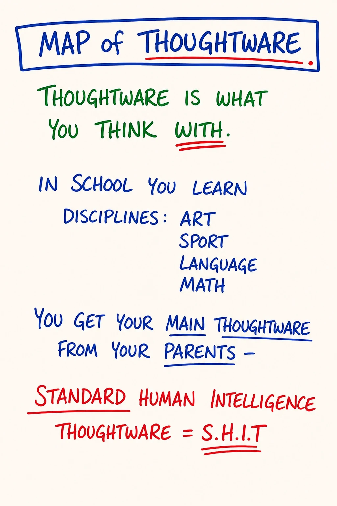
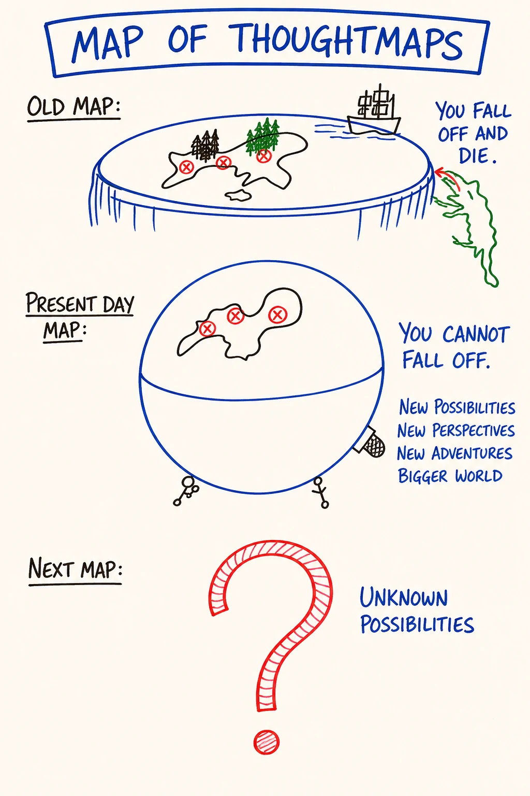
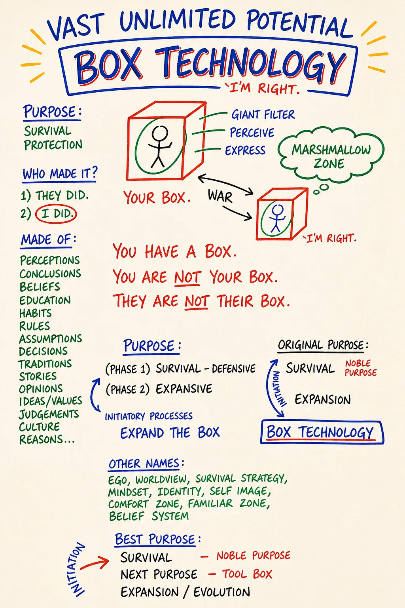

Module 02 · Thoughtware, Thoughtmaps, Box Technology
| Intensity | Medium (disidentification work + Box inventory + survival-layer preview) |
| Sittings | 3 (break points are marked in the module) |
| Partner check-in | Yes. This is a Medium day: before the Box-Inventory practice (Sitting 3), confirm your partner or witness is reachable within 24 hours. A ten-second message ("starting Module 2's practice today, you around this week?") is enough. Solo path: confirm your defer-list note is current and the grounding page is bookmarked. |
| Tools for this module | Study the map: M02 Thoughtware · M03 Thoughtmaps · M04 Anatomy of the Box — Run the practice: Box inventory |
Daily spine: Phase A — Beep! Book morning capture (3-5 min). See Daily Practice Spine.
Videos: The written module is complete on its own. Videos are optional enrichment; see the Video Manifest.
Before you start — recall (5 minutes)
Close everything. On a blank page, redraw Module 1's chain from memory: seven links, the arrow, which end is invisible. Then say Module 1's core distinction out loud, in your own words: what is context, what is content, and why does the work start on the left? Then open the M01 map and check your drawing against it. Whatever you missed is not a failure; it is this warm-up doing its job. Five minutes, no more.
{kind=link}
Purpose
To install the one perceptual cut the rest of the course is built on: you have a box; you are not your box.
Module 1 named the chain. Module 2 makes the second link of that chain, thoughtware, directly visible, then walks you to the specific piece of thoughtware called the Box, then performs the single most important move in PM: disidentifying from it. Not destroying it. Not improving it. Disidentifying: stepping back far enough to see it, so that for the first time it stops being you and starts being something you have.
If this move takes, every module after this one has somewhere to land. If it doesn't, the rest of the course becomes interesting reading about somebody else's life.
Core PM concepts
- Thoughtware. What you think with. The internal architecture, not the contents. You cannot see it the way you cannot see your glasses while wearing them.
- Thoughtmap. A specific cognitive map used to navigate. Box, Five Bodies, Low Drama, the Chain: each is a thoughtmap. The map is not the territory. A tool, not a doctrine.
- Matrix (first mention). The energetic structure you build, through practice, that determines how much consciousness you can hold. Thoughtware upgrades install onto it. Taught in Module 3.
- Box. The survival/protection thoughtware you assembled in childhood. What kept you alive then. Also what you have been identified with: most adults, asked "who are you?", accurately describe their Box.
- Box layers. Surface (behaviors, habits) · Story (beliefs, rules) · Survival (identity-level commitments formed in response to threat). Module 2 stays at surface and story. Survival is touched later.
- Disidentification. The move from I am this to I have this. The first PM move and the precondition for liquid state.
- Box detection. Noticing, in real time, that you are reacting from a rule set by something that already happened.
Learning outcomes
By the end of this module you will:
- State, in your own words, the difference between thoughtware and the thoughts that run on it.
- Describe your own Box at the surface layer (at least five specific habitual reactions, rules, or automatic moves) neutrally, without making the Box wrong.
- Catch your Box in the act at least once during the between-module experiment, and name it (silently or out loud) while it is happening.
- Hold, for at least 60 seconds, the experience I am noticing my Box right now. I am not my Box.
- Complete a partner exchange in which you described one surface-layer Box pattern without explaining, justifying, or apologizing for it.
Module flow
| Step | Time | What you do |
|---|---|---|
| 0 | 5 min | Run Script 2 (5 min centering) from the Solo Centering and Grounding Scripts. Then open the module. |
| 1 | 10 min | Recall warm-up (above), read this header, send the partner check-in message |
| 2 | 45 min | Read teaching notes part one: thoughtware, the matrix seed, thoughtmaps, with the glasses test and same-territory test inline |
| 3 | 30 min | Read teaching notes part two: the Box, Box detection, disidentification, the three layers |
| 4 | 20 min | The Box-Inventory practice (solo, embodied) |
| 5 | 20 min | Partner voice exchange (record + send) |
| 6 | — | Receive partner reply within 24 hours; record your reply back |
| 7 | 2 days | Run the between-module experiment |
| 8 | 20 min | Journal the reflection prompts |
| 9 | 5 min | Close the loop · post one line to the cohort feed |
Honest total: about two and a half hours of seated work across the three sittings, plus the experiment running on ordinary life-time. Do not do the Box-Inventory in the same sitting as the heavy reading. The reading goes into the intellectual body; the inventory has to land somewhere else, and it needs a gap (a night of sleep is ideal) to do that.
Concept teaching notes
Thoughtware is what you think with

▶ Study M02 in the Map Atlas →
Study the map before reading on. It names the layer of cognition almost nobody can normally see: the operating system you think with, drawn as distinct from the thoughts that run on top of it. Hold that split, content above, architecture below, while you read.
Ask most people what they think and you get content: opinions, beliefs, conclusions, memories, plans. That is what you think about. Thoughtware is the layer underneath: the operating system the content runs on; the structure that determines which thoughts are even available to be thought. An opinion is content. A belief is content. Thoughtware is the substrate that decides which opinions and beliefs are even reachable in the first place.
You did not choose your thoughtware. You inherited it from your parents, school, culture, the language you happen to speak. (English has thoughtware Portuguese doesn't: "the glass broke" vs. "I broke the glass" is two different operating systems for cause and agency.) You absorbed it before you knew you were absorbing anything; by the time you could think, the apparatus you were thinking with was already in place. That is why you cannot see it. You are not looking at it; you are looking through it.
Most "personal change" swaps the content (a new affirmation, a new resolution) and leaves the thoughtware where it was. The new belief runs on the old operating system, and the old operating system eats it within a week. The architecture wins. The course upgrades thoughtware: not new content to memorize, but new distinctions that update the layer underneath.
One word to plant now, because Module 3 builds on it: where do thoughtware upgrades install? Onto your matrix: the energetic structure you build, through practice, that determines how much consciousness you can hold. Distinctions, feelings at higher intensity, responsibility at larger scale: each requires matrix to hold it, and matrix is built through conscious practice, rep by rep. Without enough matrix, an upgrade has nowhere to live, which is why this course runs on practices and experiments instead of on reading. For today the word is enough; Module 3 teaches the map. (Glossary entry: Glossary of PM Distinctions.)
Two things to hold about the upgrade. First, it is additive, not a replacement: installing new thoughtware does not delete the old configuration. The old one stays available, and the new one becomes possible. You gain choice between configurations, not erasure. Second, your thoughtware is not your personality or your fate. It is technology, and technology can be updated. The "me" that feels essential and permanent is largely one inherited configuration you have been identified with: the Box (the next two teaching blocks are about that specific configuration).
You will know it is upgrading because things that used to be invisible become visible, and once visible, you cannot un-see them. You cannot unbite the sour apple. A real upgrade does not give you a new opinion about the territory; it gives you new eyes.
Micro-practice — the glasses test (8 minutes). Do this now, before reading on. Pen, paper, timer for five minutes. Write the heading: Things I think are obviously true that other people, in other places, do not think are obviously true. Write without stopping: about time, money, food, work, family, gender, conflict, what's polite, what's rude, what's normal. Do not censor; write fast. When the timer ends, read the page: each sentence is a piece of your thoughtware made briefly visible. They feel obvious because they are the glasses you are wearing, and they are not obvious to someone raised in a different family, country, or decade. For the last three minutes, read each line again slowly and say out loud: "This is thoughtware. I have been thinking with this. I did not choose it. I can notice it." Change nothing; argue with nothing. Just feel the difference between that's just how it is and that is one configuration I happen to be running. Put the page in your course folder; you will want it on Module 9. What to expect: the first two minutes produce banalities. Keep writing. The real thoughtware usually surfaces in minute four, right after "I can't think of anything else."
Common misunderstandings about thoughtware.
- "Thoughtware is just a fancier word for beliefs or mindset." Beliefs and mindset are content, downstream. Thoughtware is the structural layer that makes specific beliefs possible at all.
- "I can upgrade it by thinking harder, or by swapping negative thoughts for positive ones." Thinking harder produces more content on the same architecture. Thoughtware upgrades only through new distinctions: perceptual cuts that make invisible structure visible.
- "Understanding the maps intellectually means the upgrade has happened." Intellectual understanding lands in the intellectual body only. A real upgrade registers across several bodies (Module 3), which is why every module asks you to do something, not just read.
Thoughtmaps are tools, not territories

▶ Study M03 in the Map Atlas →
Stop here and take the map in. Shape first, labels second. This is the meta-map, the map about the maps. It lays out the thoughtmaps this course installs side by side and holds them all to one rule: each is a tool, none is the truth. Notice it is an index, not a hierarchy; no map sits above the others as the real one.
A thoughtmap is a specific cognitive map you use to navigate a specific piece of territory. The Chain (Module 1) is one. The Box (today) is one. Five Bodies (Module 3), Old Map of Feelings (Module 5), Low Drama (Module 7), Ego States (Module 9): each cuts the territory differently and lets you see what was previously a fog. PM has roughly twenty across the full body of work; this course installs the core set.
The map is not the territory. No PM map is true. The Box is not a literal box in your head; the Five Bodies is not anatomy. A thoughtmap is a perceptual cut that gives you traction, nothing more. The moment you treat one as doctrine (this is how things really are instead of this is one useful way of looking) you have turned the thoughtmap into a Box, and it has stopped working. Anyone who finds themselves defending a PM map has already misunderstood: the maps are not positions to hold, they are tools to reach for.
A few distinctions that keep the toolbox alive:
- Tool, not identity. A learner who uses the Low Drama Triangle has a tool. A learner who is a Possibility Manager has converted the toolbox into an identity, and the identity is now running them.
- Integration is using, not believing. A map is integrated when you can reach for it under pressure, use it, and put it down afterwards, without needing it to be true. Belief is the opposite of integration.
- Many maps for one territory. Anger can be looked at through the New Map of Feelings (archetypal energy), the Five Bodies (sensation vs. charge), Low Drama (Persecutor performance), or ego states (Child vs. Adult). None is the answer; each reveals what the others miss. You pick up the one that gives traction, use it, put it down.
- The learner is the verifier. Your direct experience, not the facilitator's authority, decides whether a map is useful. As Vera says in the live training: try it on like a t-shirt. Run it for a week. If it doesn't fit, take it off. None of this is a rule.
Micro-practice — the same-territory test (12 minutes). Do this now, before reading on. Pick one specific recent situation, under a week old, that produced a strong reaction: a conversation that went sideways, a moment of avoidance, a burst of anger, sadness, or fear. Write it in two sentences: who, what, when. Then look at that same situation through three maps in turn, three minutes each, speaking or writing. Map 1, the Chain (Module 1). Walk it backwards: result? behavior? choice? option? map? thoughtware? context underneath all of it? Map 2, the Box (today). What surface-layer Box pattern was running? What rule was the Box following? What past situation was the Box treating this present one as? Map 3, one you've heard of but don't yet understand (Five Bodies, Low Drama, Old Map of Feelings). Try it on without needing to use it well: what does looking through it even suggest, loosely? For the last three minutes, sit with what came. Each map revealed something different; none was the answer. The situation didn't change, but you now have three handles instead of zero. Close by saying out loud: "These are maps. None is the territory. The territory is whatever it is. I have tools." What to expect: Map 3 will feel like guessing. Guessing with a map you half-know is still a rep; precision comes when the module teaches it.
Common misunderstandings about thoughtmaps.
- "PM maps describe how reality actually is; learning them is learning the truth." They are perceptual cuts, not descriptions of reality. Useful for navigation; not claims about the territory.
- "If two maps say different things about the same situation, one must be wrong." Different maps reveal different aspects of the same territory. They are complementary, not competing.
- "If a map doesn't immediately resonate, it's not for me." Resonance is not fit. Some maps land slowly precisely because they cut through territory you are heavily defended around. Try them on for the time the course suggests, then decide.
SITTING BREAK — stop here if you need to. When you return: one breath, re-read your last Beep! Book line, continue with Sitting 2 of 3.
The Box

▶ Study M04 in the Map Atlas →
Give the map a full minute before the words. It carries the load-bearing line of the whole course directly on its face: "You have a Box. You are NOT your Box. They are NOT their Box." It maps three layers (surface, story, survival) and the predictable ways the structure defends itself. Open it once side-by-side with this module; you will keep coming back to it.
The Box is the thoughtware you survived childhood by thinking with.
You were born without it. You assembled it in your first years of life. You watched what worked. You watched what got punished. You absorbed rules, most never spoken, none written, about how to be a person in your family, your culture, your body. You built a structure that could detect threat early and respond automatically before threat became danger.
That structure kept you alive. It is not the enemy. The Box was an act of intelligence by a small human in conditions they did not choose. A child cannot leave, cannot pick the rules, can only adapt.
The problem is not that you built it. The problem is that you cannot tell it from yourself.
By adolescence the Box has fused with the you that lives inside it. Ask most adults who they are and they will accurately describe their Box. The likes and dislikes are the Box's. The reactions that happen before thought are the Box's. The phrase "that's just how I am" is the Box talking.
The Box was designed for that environment: the family, culture, era you grew up in. Most of that environment is no longer here. But the Box does not know that. It keeps reading the present through the filter of the past, producing reactions calibrated to threats that already finished. When you react to your boss the way you used to react to your father, the Box is in the chair. When the same fight in your relationship happens for the eighth time in the same shape, the Box is in the chair.
Box detection
The core skill of this module: catch yourself reacting from a rule you can sense was set by something that already happened. Most of the time you catch it after: three minutes after, an hour, the next morning. That's fine. As Vera puts it: we sharpen through our oops, through our beeps, through our oops.
Three things make catching easier:
- The body signal. The Box has a signature: a tightening, a held breath, a familiar warmth in the chest. Notice yours.
- The script. Sentences that come out with no apparent author. "That's just how I am." "I don't have a choice." "They always do this." "I can't." Notice sentences that come out rather than sentences you choose.
- The predictability. The Box is a repetition engine. Same fight, same blocked move, same disappointment: a program is running.
"You have a box. You are not your box."
The disidentification move. Say it out loud now.
I have a box. I am not my box.
The grammar matters. I am puts you inside the Box, looking out through it. I have puts you outside, looking at it. That is the difference between a life lived inside a structure and a life lived next to one.
The grammar generalizes past this one sentence. The same move works on anything you are fused with: I am angry → I have anger. I am anxious → I have anxiety in me right now. I am a perfectionist → I have a perfectionist pattern. PM calls this the difference between is-glue and has-glue: is glues you to the structure; have sets you down next to it. The whole disidentification lives in the verb.
Disidentification is not destruction. You will likely have your Box, in some form, for the rest of your life, and that is fine. The work is to stop confusing it for yourself, so that you have access to the choice the Box never had.
Expect the Box to defend itself the moment it is looked at. The defenses are predictable, and each one is itself a Box move: justification ("I have a good reason"), righteousness ("I am the one who is right"), withdrawal ("I'm fine"), collapse ("I'm a terrible person"). When one of these fires while you are looking at your Box, that is not a detour from the work; it is the work. Notice the defense, name it, keep looking. ("No, but I really am this" is itself the Box defending; keep going.)
You will know disidentification has begun when, in a moment that would normally be entirely run by the Box, you sense something happening alongside the Box that is not the Box: quieter, slower, with more space. That something is what PM calls Being, what you actually are, prior to the Box. Module 2 is not the day you live there. Module 2 is the day you notice the door exists.
Common misunderstandings about the Box.
- "The Box is the bad part of me, and the work is to get rid of it." The Box kept you alive. The work is disidentification, not destruction; you will likely have your Box for life.
- "'I have a box' means I am broken or defective." It is a structural observation, not a verdict. Every adult has one. Not a defect: thoughtware. If the inventory turns into a self-criticism list, the Box has eaten it; ground and return to neutral.
- "Once I see my Box clearly enough, it will dissolve." Seeing loosens identification but does not dissolve the structure. The Box remains; you gain the capacity to choose whether to operate from it.
- "If I'm still reacting from my Box after looking at it, the work hasn't landed." Disidentification does not stop the reaction. It introduces a quieter parallel awareness: something is reacting here that is not all of me. The reps compound.
- "I can reach the deepest survival-layer material in week one if I look hard enough." Reaching survival material without the Five Bodies (Module 3), the new map of feelings (Module 5), and ego states (Module 9) is unsafe. The course paces this deliberately (see the three layers, below).
The three layers — and why we stay at the top two today
- Surface. Behaviors, habits, automatic reactions. "I laugh when someone is angry." "I check my phone the second a conversation gets quiet."
- Story. Beliefs, rules, narratives the surface rests on. "If I disagree, they will leave." "I have to be useful to be loved."
- Survival. Identity-level commitments formed early in response to threat. The layer where the Box says, often without words, if I let this go I will die.
Today we work at surface and story. Deliberately. Reaching for survival without the Five Bodies (Module 3), the new map of feelings (Module 5), and ego states (Module 9) is unsafe. The surface is plenty; most learners are stunned by how much Box becomes visible there.
A note about the browser tool, because it shows the survival layer on its diagram: the Box inventory tool keeps the survival layer behind a consent prompt. That consent is asked fresh on every visit and is never remembered. Not stored, not carried over from last time, gone when you close the page. Yesterday's yes does not speak for today, in this tool or anywhere else in this course. If you open the tool today and decline, nothing is lost: surface and story are the whole of today's assignment.
The Gremlin is not the Box
For now: the Box is structural, the survival-and-protection thoughtware running underneath. The Gremlin is active: the part of you that wants drama, suffering, righteousness, distraction. The Gremlin protects the Box. When the Box is being looked at, the Gremlin gets loud. If in the next 24 hours you find yourself wanting to declare the whole course is nonsense, quit, pick a fight, or eat an entire jar of something in front of a screen: that is Gremlin. Notice it. Don't act on it. Worked directly in Modules 7 and 9.
SITTING BREAK — stop here if you need to. When you return: one breath, re-read your last Beep! Book line, continue with Sitting 3 of 3.
Embodied practice (solo) — The Box-Inventory
20 minutes. Paper and pen. Phone face-down, in another room if possible. Partner check-in confirmed (header). Read the script through once, then do it. (The browser version exists if paper is genuinely impossible today; paper is better for this one, because the page you produce goes into your course folder and comes back out in Module 9.)
Script.
Sit. Both feet on the floor. Spine long. Three breaths, exhale longer than inhale, audible.
Out loud: "I have a box. I am not my box. I am going to look at the surface of my box for the next 20 minutes."
Write five headings on your paper:
- Things I always do (automatic behaviors, habits, moves that just happen)
- Things I always say (sentences that come out by themselves, the ones you have said a thousand times)
- Things I cannot stand (reactions, in others or in yourself, that flip a switch in you instantly)
- Rules I follow without remembering deciding to (about food, money, time, what is appropriate, what is shameful)
- People I become around certain people (who do you become around your mother? your boss? your ex? your best friend?)
3 minutes per heading. Set a timer.
Write fast. Do not edit, explain, justify, or turn anything into a story about why. The Box is not on trial. The Box is being looked at.
If you feel resistance (the inventory feels boring, you suddenly remember an urgent email, you want to stop): that is the Box noticing it is being looked at. Keep writing.
When the timer ends, read the page slowly, as if it is someone else's. Notice what your body does as you read.
Out loud, page in front of you: "This is the surface of my box. I have all of this. I am not all of this."
Sit for two minutes. Do nothing. There is no right reaction.
Put the page in a folder you will use across the course. You will return to it in Module 9.
What to expect: heading 5 is where most learners hit something real. If a heading stays blank for a full minute, say the heading out loud and write the first thing your body produces, even if it seems trivial. Trivial entries are usually the true ones.
Variation B — the has-glue / is-glue switch (~10 min). If the inventory keeps you in your head, or you want to drill disidentification at the level of grammar, run this instead of or after the inventory. Sit, paper and pen, phone face down. Write five sentences about yourself beginning "I am .", whatever comes: I am a perfectionist. I am anxious. I am the responsible one. I am bad with money. Write fast. Read them aloud, one at a time, and notice what your body does and where each sentence locates you: inside the thing or next to it. Now rewrite each in the "I have" form: I am a perfectionist → I have a perfectionist pattern; I am anxious → I have anxiety in me right now; I am bad with money → I have a Box pattern around money. Read the I have set aloud, slowly, and notice the difference this time: more space, more distance, less weight, more choice (or whether the Box objects: "no, but I really am this" is a Box defense; keep going). For the last two minutes, pick one and say it both ways, three times slowly: I am / I have ___. Feel the gap between standing inside the structure and standing next to it. That small distance between am and have is the doorway into every other practice the course will ask of you.
If during the practice you feel ungrounded (far away from yourself, room hazy, breath shallow, the inventory starting to feel like an attack): stop and use the 60-second grounding script (ground.html). The Box can experience being looked at as a small death. Brief ungroundedness as identification loosens is information, not a problem.
Partner exchange (async)
Same voice-message structure as Module 1. Different content. (Solo path: voice memo to yourself, three reply points written in the Beep! Book the next day.)
Prompt to record (3–8 minutes):
- One specific surface-layer Box pattern from your inventory. Not the most dramatic: a small specific one. Name it neutrally: "I laugh when I'm uncomfortable." "I say I'm fine when I'm not." "I check my phone three seconds into any silence." Do not explain. Do not narrate the backstory. Just name it.
- What it cost you to look at it today. Did you flinch? Find a reason to take a break? Want to make it sound funnier than it is? Try to fix it immediately? Tell the truth about the moment of looking.
- **One sentence in the form: *"I have a . I am not my ."*** Say it once at the end. Let it land.
Speak from your body. Do not edit. Performance is the Box.
When you receive your partner's message, listen all the way through once before you reply. Then record (3–8 minutes):
- What you heard them say: paraphrase the specific surface pattern they named, without softening it.
- What you noticed in yourself while listening: a body sensation, a feeling, a recognition. (A partner's Box pattern often names one of yours.)
- One open-ended question: not advice. The question that lands in their body, not their head.
No fixing. No "I had the same thing and what helped me was…" Coaching is taught in Module 8. Today is witnessing one small specific Box pattern, named cleanly, without rescue.
Between-module experiment
The standing format: what I will do / by when / what I will notice. One at a time. Write the three parts in your Beep! Book before you run it. Pick one; run it before you start Module 3.
- Catch-and-name. What: catch my Box in the act one time, and while it is happening say silently: "This is my box. I am not my box." No changing the reaction; naming only. By when: within 48 hours. What I will notice: what shifts in the half-second after the naming.
- The repetition map. What: identify one scene in my life that has happened many times in the same shape (same fight, same blocked move, same disappointment) and write the shape in three sentences: who is in it, what happens, how it ends, then ask: what rule is my Box running here? By when: before Module 3. What I will notice: whether seeing the shape changes the pull of it, even slightly.
- The sentence audit. What: for one whole day, notice sentences that come out of me that I did not choose, and write three of them down by evening. By when: tomorrow night. What I will notice: what it does to hear my own Box vocabulary read back off the page.
Capture within ten minutes, in the Beep! Book, flat lines: what I did · what happened. A missed or failed run is a Beep!; the Beep! goes in the book and counts as a completed rep of the loop.
Callback rep (Module 1's instrument): once before Module 3, re-run the four-level sentence from Module 1, using a sentence your Box produced this week. Ninety seconds, four levels, out loud. Notice which level the Box's sentence was natively spoken from.
Reflection prompts
Journal at your own pace. Longhand if you can. Do not write the answers your Box would want you to write.
- Before this module, what did the word me refer to? Has it shifted at all? In what direction?
- Which item on your inventory was the hardest to put on the page? What made it hard? (The hardness is often the door.)
- When you said I have a box. I am not my box., what did your body do? What did your mind do? Did they agree?
- If your Box is currently in charge of one specific area of your life (a relationship, a recurring decision, an avoidance pattern), name it. Do not write a plan to change it. Name it precisely.
- The Box kept a younger version of you alive. Can you locate the conditions it was built for? You are not required to, but if the answer comes, write it.
Safety callouts for this module
Module 2 is Medium-intensity, the highest of the front-half modules, which is why its header asks for the partner check-in before the practice. The cognitive content is moderate; the disidentification move is the energetic load. For most learners it lands as relief: oh, that's the Box, that's not me. For some it lands briefly as ungroundedness: if that's the Box, then who am I? Both are normal.
- Brief disorientation after the inventory or the disidentification sentence. When identification with the Box loosens, some learners report a few minutes of floating or "who am I?" sensations. This is the structure giving a millimetre of slack. Use the 60-second grounding script (ground.html, or Script 1 in the Solo Centering and Grounding Scripts). Do not "push through" disorientation; that is the Box trying to take the inventory back.
- The Gremlin gets loud. In the 24 hours after looking at their Box for the first time, some learners feel a strong urge to declare the course is nonsense, pick a fight, quit, or numb out. That is the Gremlin protecting the Box. Notice it. Name it. Don't act on it. If you are actually about to act on it: call your partner or witness. A 90-second voice message usually defuses it. (Solo path: write the urge in the Beep! Book in flat lines, then take a ten-minute walk before deciding anything.)
- Mistaking the Box for the self. A common failure mode is treating "I have a box" as new self-criticism: I am bad because I have a box. The Box is not the enemy. The Box kept you alive. The work is to disidentify, not to attack. If the inventory becomes a self-flagellation list, stop, ground, re-read "I have a box. I am not my box," and resume only when the energy is neutral.
If at any point you notice you are floating, dissociating, or shutting down: stop, ground, decide. This course is not therapy. If looking at your Box surfaces material clearly bigger than this module was built to hold, use the Referral List and contact the CM. The Box will still be here next week.
Cohort feed post (suggested)
One line each, no more (solo or witness path: same lines, into the Beep! Book):
- The smallest specific surface-Box pattern I caught today: …
- What I noticed in my body when I said "I have a box, I am not my box": …
- (Optional) One question for the group: …
Glossary additions
- Thoughtware: what you think with; the internal architecture; distinct from the thoughts (content) that run on it
- Thoughtmap: a specific cognitive map used to navigate; the map is not the territory; a tool, not a doctrine
- Matrix: the energetic structure you build, through practice, that determines how much consciousness you can hold; thoughtware upgrades install onto it; first mention today, taught in Module 3
- Box: the survival/protection thoughtware assembled in childhood; what you have been identified with; you have a box, you are not your box
- Box layers: surface (behaviors/habits) · story (beliefs/rules) · survival (identity-level commitments); Module 2 works surface + story
- Disidentification: the move from I am this to I have this; the precondition for liquid state
- Box detection: catching, in real time, that you are reacting from a rule set by something that already happened
- Being: what you actually are, prior to the Box; quieter, slower, with more space; not always locatable, and that's normal
- Gremlin (preview only): the part of you that wants drama, suffering, righteousness, distraction; protects the Box; worked directly in Modules 7 and 9
Close the loop (5 minutes)
On the three-word scale from the Learning Self-Assessment (not yet / starting / landed in my body), rate yourself on two statements: "I can describe one surface-layer Box pattern of mine neutrally, without making it wrong" and "I can feel the difference between 'I am' and 'I have' in my body, not just explain it." Rate in the direction of "not yet"; a not yet means one more pass at the inventory or Variation B before Module 3, and nothing more than that.
Add today's one-distinction entry to My Map Book: one distinction in your own words, one lived example.
Stepped away and coming back later? Use Coming Back. The inventory page will still be in the folder.
🄯 World Copyleft 2026 · Expand the Box (Digital) · licensed CC BY-SA 4.0, consistent with the spirit of World Copyleft · re-presents Possibility Management thoughtware originated by Clinton Callahan & the Possibility Management community · this course is an independent re-presentation, not an official Possibility Management training · please share, share-alike · Powered by Possibility Management (possibilitymanagement.org) · full terms:
LICENSE.md in the course root